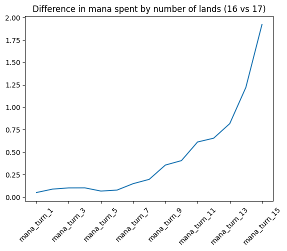

Data:
17lands data from the sets 'DMU', 'LCI', 'LTR', 'MOM', 'SIR', 'SNC' for best of 1 Premier Draft and only looking at two-color pairs.
Synopsis:
16-land decks appear to have higher win rates than 17-land decks when considering mana curve, across set/color pair variations and within specific subsets of a color pair in best of one MTG Arena limited games. I propose the additional win rate comes from 16-land decks having access to an additional spell, thereby enhancing overall mana efficiency on any given turn.
Outline:
- Why the default is 17 lands
- Macro win rate by Land count: Challenges in analysis
- Effect of Curve type on win rate and land count
- Set/color pair specific win rates (heterogeneity)
- Single Archetype deep dive: Identifying Extra Win Rate Source
Why the Default is 17 Lands
Conventional wisdom in limited Magic suggests using 17 lands in a deck. Frank Karsten's research on successful tournament decks and simulation modeling supports this notion. Although I can’t find the original article this is quoted from, he has the following to say about land counts in limited:
The numbers for 17 lands in Limited are similar to the ones for 25 lands in Standard. This also makes sense because 25 * 40/60 = 17.5. Since typical Limited decks need their first 3 land drops, would like to hit their 4th land drop, but don’t necessarily need 5 lands by turn 5, the age-old standard of 17 lands indeed seems like a good number.
Frank Karsten
Source: Draftsim
This recommendation is also echoed by the MTGA client during deck building. I think the rationale behind this recommendation is rooted in hypergeometric optimization, factoring in probabilities of having a certain number of lands on a given turn while minimizing the risk of flooding out.
Win Rate by Land Count
Analyzing the average win rates of limited decks from 17lands public datasets by land count reveals intriguing patterns:
- Decks with curves that are more efficient on early turns perform better in general than decks that are more efficient in later turns
- Strong archetypes may skew the data.
- People might only play 15 or 16 lands when the opportunity is right, therefore distorting the data
- Since 17 lands is suggested by arena, only strong players might change their land counts, artificially increasing the win rate of land counts that are not 17 lands
Effect of Curve Type on Land Count Win Rate
In order to address the effects of a deck's mana curve on mana efficiency and win rate, I have created a metric called “curve score”. I have an explanation on how I created it and its general operation here.
In summary, I looked at the effect of the mana curve on mana efficiency (not win rate) and created a single metric that associates certain curve’s mana efficiency based on the turn of the game. I am still developing this, so I’m sure there is room for improvement, but in general, it works intuitively.
Here are some examples of the average curve based on curve score:


As you can see, high curve scores have lots of cheap cards, medium curve scores have curves like the one Frank Karsten defines in his article “What is the Optimal Mana Curve and Land/Ramp Count for Commander?”. Low curve scores have lots of expensive cards and are obviously very mana efficient in the late game (when you have lots of lands!)
Since I can now group decks by curve score, I can look at land count and win rate by how aggressively decks are built.
This plot shows that the general trend of 16 land decks having higher win rates than 17 land decks exists across all subsets of curve score (decks designed to be efficient at different points in the game). The win rate differences between 16 and 17 lands specifically are found to be statistically significant using hypothesis testing (total population 4 million games, alpha .05).
A problem pointed out with this analysis is that some very successful archetypes (think UR in LCI) are hiding in certain parts of the data and distorting the results. I think I am testing for the effect of lands on win rate, but really I am testing for the presence of some very strong archetype in a specific slot in the land count data.
In order to address this I performed testing on every set/color pair in my dataset.
Set/Color Pair Specific Win Rates (Heterogeneity)
Once the data is subset to set/color pair (like UR in LCI or WG in MOM), the data starts to look more noisy and starts to take on some set-specific shapes.
I tested every set/color pair combination and found that 16 lands has a higher win rate than 17 lands in 90% of the subsets, (not subset by curve type) and 67% of those subsets passed a one-sided t-test (alpha = .05).
Single Archetype Deep Dive: Where the Extra Win Rate Comes From
In order to determine where the extra win rate comes from in 16 vs 17 land decks, I tried to control as many variables as possible and only change the land count from 16 to 17 lands and examine the results.
I chose BR from LTR as the data because it has the largest amount of games played in my overall dataset (184,028 games).
Curve Type:
Because of my curve score, I was able to identify differences in the types of decks 16 and 17 land users play.

16 land users play slightly more aggressive decks than 17 land users. I used resampling to create a dataset where the curve types between the two groups are the same.
Player Skill:
I have noted in other investigations that players at different ranks seem to perform differently. By rule of thumb, the higher the rank, the more mana a player spends. You can read about it here. (I am just joking around about the title, this is written tongue in cheek.)
Caveat: I am not interested in the topic of rank/skill, I am sure there are things wrong in that article, but the general trends suggest you should control for rank if possible.
I performed the same resampling so that the ranks were evenly distributed across 16 and 17 lands.
Card Quality:
A card's ALSA (average last seen at) is a metric calculated by 17lands. It is the average pick that a card is last seen in the draft. Sierkovitz has shown how ALSA itself is not linear, but I have found that a deck’s average ALSA seems to have some linear correlation with win rate.

In general, I think this makes sense. If a deck has more cards that generally go early, (and players in aggregate pick better cards early) the correlation passes an intuitive check. I don’t have any further investigation on this other than I want to control for a deck’s card quality by matching them between the two land counts.
By resampling again, I produced a dataset where card quality is roughly the same.
Results:
Once all of these variables were controlled for (each resample the curve type, card quality, and rank distribution was tested for statistically significant differences, and no difference was found) there is still a statistically significant difference in win rate between 16 and 17 lands, although the difference has shrunk considerably. You can see the difference in the plot below. (Note: The graph only shows the final win rate, not the win rate at each resampling step.)
My hypothesis for the remaining difference is that players tend to win more when they have more mana available to them, or when they make more decisions during the game. 16-land decks have an extra spell, and therefore have more access to cards in general.
In general, I find mana efficiency to be correlated with win rate, and as such, it is expected that 16 land decks have a higher win rate than 17 land decks.
Results
After applying these controls I found a 1.2% higher win rate for 16 land decks than 17 land decks forBR in LTR.
| Land Count | Mean Win Rate |
|---|---|
| 16 Lands | 0.595 |
| 17 Lands | 0.583 |
This is 75% of the difference in win rate between 16 land decks and 17 land decks in the overall win rate difference from the very beginning of the investigation.
Explanation for the Difference in Win Rate
Win rate and mana efficiency (the cause of mana differential) are highly correlated in Magic, and the trend is linear around the average difference in a game of Magic (0 mana).
I found a consistent difference in mana efficiency between the 16 and 17 land decks.
As you can see in the graph above, at every turn in the game, 16 land decks are more efficient than 17 land decks (with the difference increasing as games go longer.) I multiplied these average differences by the percent of total games that end on those turns, and found that 16 land decks spend .33 more mana than 17 land decks.
When you model the linear range of win rate vs mana differential, the model predicts a difference in win rate of 1.9% for a mana differential of .33.
Where does the mana efficiency come from?
If the curve scores are held constant between the two decks, how is a 16 land deck more efficient at every stage of the game? To examine this, I looked at the average value of each curve slot in the 16 and 17 land decks.
Notice how the 16 land deck seems to have fractionally more cards at every slot in the curve (besides 5)
It makes sense that a deck with more one drops is more efficient on turn one, the same logic goes for turn two, turn three, etc…
If you sum up all the differences between 16 land and 17 land curve slots you get:
Total card difference = 1.0098995543333038 : Exactly 1 nonland card more in 16 land decks, effectively increasing mana efficiency on every turn
By playing one less land, and in aggregate spreading that extra card out across all possible curve slots, you are effectively increasing your mana efficiency at all points in the curve.
Conclusion
The essence of the analysis is that by playing more spells, you are increasing a deck’s ability to be mana efficient on a particular turn. When this data is looked at in aggregate, we can see that this is not exclusive to decks that want to be efficient early; the extra card can be placed at any spot in the curve where the extra efficiency is desired. When modeling win rate vs mana differential, this increase in efficiency suggests a very similar win rate to the difference in win rate observed in the 16 land vs 17 land data.
In best of 1 Arena, there is a “hand smoother” that decreases the variance on too many/too few land hands, and this might account for diminishing the penalty incurred by playing fewer lands. However, very similar trends in win rate are found in best of 3 data (no hand smoother) compared to the best of 1 data (smoother).